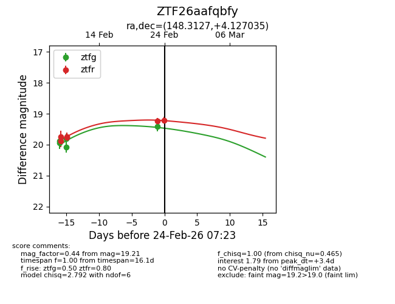
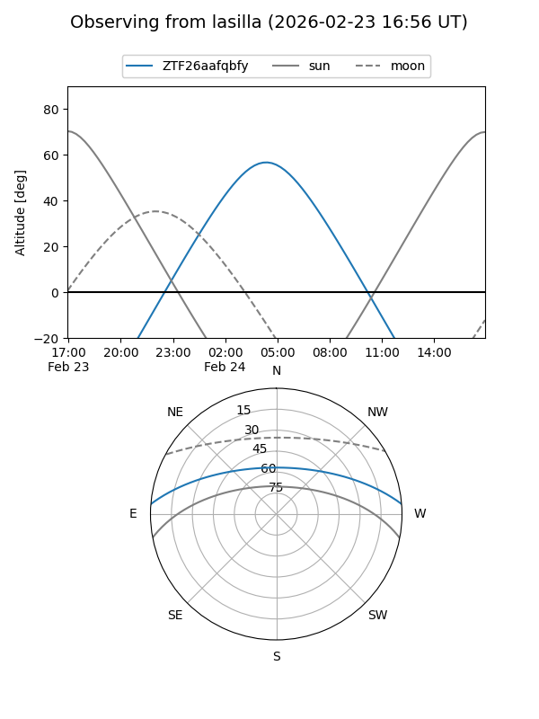
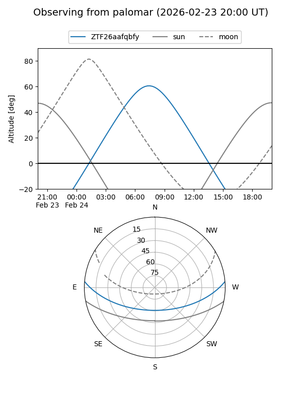

ZTF26aafqbfy
Target ZTF26aafqbfy at 2026-02-24 09:08
Aliases and brokers:
FINK: link
Lasair: link
ALeRCE: link
alt names
ZTF26aafqbfy (ztf,fink_ztf)
Coordinates:
equatorial (ra, dec) = 148.3127,+4.12704
equatorial (HMS+DMS) = 09:53:15.04,+04:07:37.33
galactic (l, b) = (233.3226,+41.71655)
Flags:
Photometry:
last ztfg=19.40, ztfr=19.21
5 ztfg, 6 ztfr detections
Lightcurve

Visibility


Additional plots